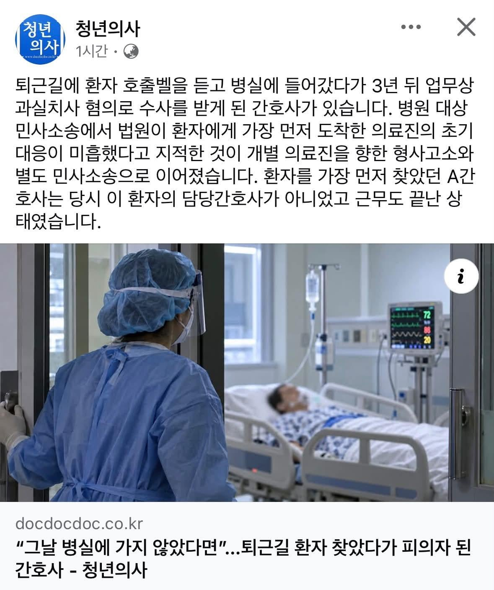
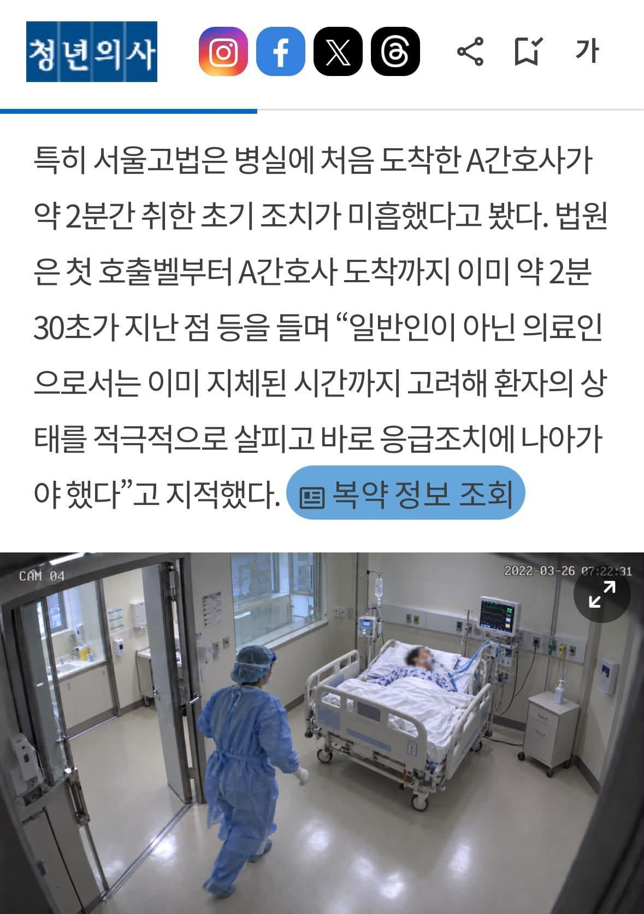

퇴근길에 긴급호출받고 환자 살리려다가 실형받음


퇴근길에 긴급호출받고 환자 살리려다가 실형받음
자기들도 유리한 이슈면 같은 의료계로 묶고
간호사들 처우 개선 요구하면 환자들 인질 잡는다고 언플
의대 증원 하자 그게답이다
이 소송의 항소심 판결문에는 당시 음압병실 CCTV 영상이 초 단위로 정리돼 있다.
판결문에 따르면 C씨는 2022년 3월 26일 오전 7시 19분 22초경부터 기침하며 호흡 이상 증세를 보였다.
오전 7시 20분 2초에 처음 호출벨을 눌렀고 이후 산소포화도가 급격하게 떨어졌다.
오전 7시 21분 13초경 34%였고, 간호기록상 오전 7시 22분경에는 27%까지 내려갔다.
환자의 호출에 가장 먼저 음압병실로 들어간 사람이 A간호사다. 그가 병실에 도착한 시각은 오전 7시 22분 31초경이었다.
A간호사는 환자에게 다가가 의식을 확인하고 활력징후 모니터를 살폈다. 이후 휴대전화로 누군가와 통화하면서 환자를 부르고 어깨를 건드렸다. 오전 7시 24분경에는 경동맥을 촉지했다. 다른 간호사가 앰부백을 들고 병실에 들어온 시각은 오전 7시 24분 54초경이었다. A간호사가 다른 의료진 없이 홀로 C씨 곁에 있었던 시간은 약 2분 20초였다.
병실에 들어온 다른 간호사들은 응급조치에 합류했다. 한 간호사는 경동맥을 확인하고 앰부백을 환자의 목 부위에 가져갔다. 또 다른 간호사는 산소통을 가져왔다. 이 간호사는 오전 7시 27분 25초경 2~3초 동안 흉부압박을 하다 중단했다. 이후 산소통과 앰부백을 연결해 오전 7시 28분 24초경부터 T-튜브를 통한 산소공급이 시작됐다. 본격적인 흉부압박은 오전 7시 30분 30초경 시작됐다.
법원은 가래와 피 등 이물질이 T-튜브를 막아 호흡부전이 생겼다고 판단했다. 그리고 호흡부전 발생 이후 병원 의료진이 적절한 응급조치를 제때 하지 않은 과실이 있다고 봤다.
1심인 의정부지방법원 고양지원은 지난 2024년 7월 B대학병원의 책임을 70%로 제한해 1억8,117만8,875원을 배상하도록 했다. 당직의 개인에 대한 청구는 기각했다. 유족이 항소하지 않아 당직의에 대한 판결은 확정됐다.
병원 측 항소로 이어진 서울고등법원도 지난해 2월 병원 의료진의 응급조치상 과실을 인정했다. 여기에 개호비 등을 추가로 인정하면서 병원이 지급할 배상액은 1억9,311만4,302원으로 늘었다.
특히 서울고법은 병실에 처음 도착한 A간호사가 약 2분간 취한 초기 조치가 미흡했다고 봤다. 법원은 첫 호출벨부터 A간호사 도착까지 이미 약 2분 30초가 지난 점 등을 들며 “일반인이 아닌 의료인으로서는 이미 지체된 시간까지 고려해 환자의 상태를 적극적으로 살피고 바로 응급조치에 나아가야 했다”고 지적했다.
출처 : 청년의사(http://www.docdocdoc.co.kr)
=================================
• 07:19:22 | 환자 C씨, 기침 및 호흡 이상 증세 시작
• 07:20:02 | 환자, 첫 호출벨 작동
• 07:21:13 | 산소포화도 34%로 급감
• 07:22:00 | 간호기록상 산소포화도 27%까지 하락
• 07:22:31 | A간호사, 음압병실 최초 도착 (의식 확인, 모니터 주시, 전화 통화)
• 07:24:00 | A간호사, 경동맥 촉지
• 07:24:54 | 다른 간호사, 앰부백 소지 후 입실 (A간호사 독자 대응 시간: 약 2분 20초)
• 07:27:25 | 의료진, 2~3초간 흉부압박 후 중단
• 07:28:24 | T-튜브를 통한 산소 공급 개시 (산소통-앰부백 연결)
• 07:30:30 | 본격적인 흉부압박(CPR) 시작
• 사고 원인 판단: 가래, 피 등의 이물질이 T-튜브를 막아 발생한 호흡부전으로 판단했습니다.
• 의료진 과실 인정: 호흡부전 발생 이후 병원 의료진이 적절한 응급조치를 제때 수행하지 않았다고 보았습니다.
• A간호사의 초기 조치 미흡: 첫 호출벨 이후 이미 2분 30초가 지체된 상황에서 도착했으므로, 의료인으로서 환자 상태를 더 적극적으로 살피고 즉각적인 응급조치에 나섰어야 했다고 지적했습니다.
요약 :B대학병원 2심 최종 배상액은 1억 9,311만 4,302원 / 개인 청구 기각
실형이란 글자도 없는데 뭔 실형이여
1심인 의정부지방법원 고양지원은 지난 2024년 7월 B대학병원의 책임을 70%로 제한해 1억8,117만8,875원을 배상하도록 했다. 당직의 개인에 대한 청구는 기각했다. 유족이 항소하지 않아 당직의에 대한 판결은 확정됐다.
실형받음 -> 아님 소송중임
형사소송은 딱봐도 억지소송이네
오우 면책
실형은 감옥에 가는걸 말하는데
뭔 수사 단계에서 '실형 받았다'고 개구라 선동질임?
기사 전문 읽어봐도 재판도 안했고
기소했다는 말 조차 없는데
당직의 개인에 대한 민사소송이
기각된 것 보면
간호사에 대한 과실치사혐의도
아예 기소도 안되고 기각되거나
재판 가더라도 무죄 나올것 같은데
수사조차도 하지 마라는 소리같음
이런 개같은 경우가...
의주빈 선동 확인
근데 진짜 도의적으로는 모르겠는데
아예 개인에 대해 면책권을 달라는건 좀 과잉면책이 아닐까 싶음.
실제.저 사건에서도 개인에 대한 소송은 기각 되었는데 물론 그 와중에 경찰서 왔다갔다하는건 힘들어도 소송자체를 못하데 하라는게 과연 맞을지..
차라리 의료종사자는 국선 변호사를 지원해준다는 식으로 법적 대응이 되게 해줘야하지 않을까 환자가 소송을 하는 것을 막는게 사실적으로 가능한 일이 아닌거 같은데
국선변호인은 의료계 종사자 아니라
누구나 가능함
그리고 소송을 막는 것도 말이 안되지
여기서 어쩌고 저쩌고 법이 잘못됐네
하는 인간들은 그냥 멍청이들
실형받았나? => 아님
뭘 해서 재판중인지 글에 나왔나 => 아님
개인적으로 영국식 모델로다가. 국가가 의료보험/급여 통제하고 있는 상황에서 비급여 제외하고 급여진료 중 발생하는 의료 사고(accident)는 국가가 그 소의 대상이 되는게 맞다고 봄. 이러면 비급여 비중 높은것도 어느정도 억제되면서 전체 비용도 아껴지겠고…
선동 ㅂㅁ
보통 개같은 변호사가 가족으로 있으면
일단 걸고보는게 ㅈㄴ많음
의료소송 진짜 개같음
나는 운좋아 잘피해서 살아남았지만
동료들 암덩이처럼 몇년을 괴롭히는 소송 한개씩은 있더라
충분히 배상 할만 한거 아님? 퇴근하는 사람이 올정도면 인원이 부족했던 거고 당직의에 대한 개인 소송은 항소도 안했고. 병원측 책임이 된거잖아? 뭐가 문제임?
뭔가 이상할땐 작성글보기를 보자
그리고 회원정보보기도 함께보고 랄부를 탁치면 된다
혹시 파업할때 같이 파업안한다고 화물노조짓 하던 애미창녀새끼인가요?ㅋㅋㅋㅋ
수사나 소송까지도 하지 못하게 해달라고?
실제 필요한 것과 아닌 것은 구분해야지
한때유행하던 단어 청년xx
돈 많이 받는만큼 책임도 크다고 보는거 같기도 하고
팩트만 말해도 좆같을텐데 왜 굳이 주작까지 하는거냐
작성글 봐라 의도가 뻔하네 임마는
아, 의료인력이 많으면 퇴근길에 저렇게 안들어가도 되겠지? 의대 증원하면 되겠다
면책은 응급실쪽 이야기아닌가?
여기서 왜 또 다들 물타고있대?
미친 선동ㅋㅋㅋㅋㅋㅋㅋㅋ 위에 판결문 봐라 ㅋㅋ
의료가 망하면 대체 안망하는 업종이 머임? ㄷㄷ
위에댓글보니까 초동대처가 미흡했다고 판결문에 적시까지돼있는데
내가 의료인이 아니라서 뭐가 어떻게잘못됐다까진 모르겠지만
보통 법원이 환자 손 들어줄정도면 명백한 의료인 과실이 있었다를 법적으로 증명을 한건데 ㅋㅋ
의료미디어들 걍 하는게 맨날 사실 배배꼬아서 의료계 약코 의사약코 여론만들기지 머.. ㄹㅇ
절대 의사약코에 속지마!!!!
변호사 하는 친구 얘기들어보면 판사도 의학적 지식이 전무하기 때문에 진짜 떠먹여줘야 이해하는 수준이라고 하더라. 판사따라 변호사 따라 달라질 수 있고 그러니 보라매사건이나 이대병원 사건처럼 의료인 입장에서는 말도 안되는 기념비적인 판결이 나와서 다 도망가게 만드는게 있음
ㅋㅋㅋㅋ 정작 소송걸린 건 간호사인데 기사 읽어보지도 않고 의주빈거리는 병신들
선동질 ㅂㅁ
나는 사실 내가 오지랍퍼라 전공의때 지나가다 정형외과나 외과 병동에서 코드싸인이 뜨면 뭔일인가 구경갔다가 c라인이나 a라인을 잡아주든 백업올때까지 바이탈을 잡아주든 인투를 해주든 뭐라도 개입하고 가긴했지만.. 그 얘기 의국 돌아가서 하면 교수님은 기겁하시면서 늘 뭐라하시긴했음.
이성적으로는 모른척 지나가는게 맞는데 일단 하게 되더라.
근데 그것도 10년도 더된 일이라 그렇고 요즘에는 아차하면 책임을 떠나 소송에 면허가 왔다갔다하니... 개입안하는게 맞을거 같긴함. 물론 그래도 닥치면 할것같지만...
그래도 이런 사회 분위기가 만들어지는건 분명 문제가 있다고 봄. 개인적으로는 법꾸라지 새끼들이 가장 문제라고 생각함.
시스템을 따지게되면 저 간호사는 근무가 끝났으니 위급이든뭐든 그냥 퇴근하고 가야하는거고 반면에 환자는 살 기회를 잃을확률이 높았을거같은데
그 상황에서 일말의 사명감 가지고 왔다는건데, 이런부분에 대한 처우의 개선이 먼저 아닐지싶어